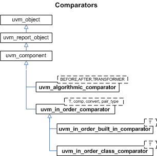

Comparators
A common function of testbenches is to compare streams of transactions for equivalence. For example, a testbench may compare a stream of transactions from a DUT with expected results.
The UVM library provides a base class called uvm_in_order_comparator and two derived classes: uvm_in_order_built_in_comparator for comparing streams of built-in types and uvm_in_order_class_comparator for comparing streams of class objects.
The uvm_algorithmic_comparator also compares two streams of transactions, but the transaction streams might be of different type objects. Thus, this comparator will employ a user-defined transformation function to convert one type to another before performing a comparison.

Summary
| Comparators | |
| A common function of testbenches is to compare streams of transactions for equivalence. |